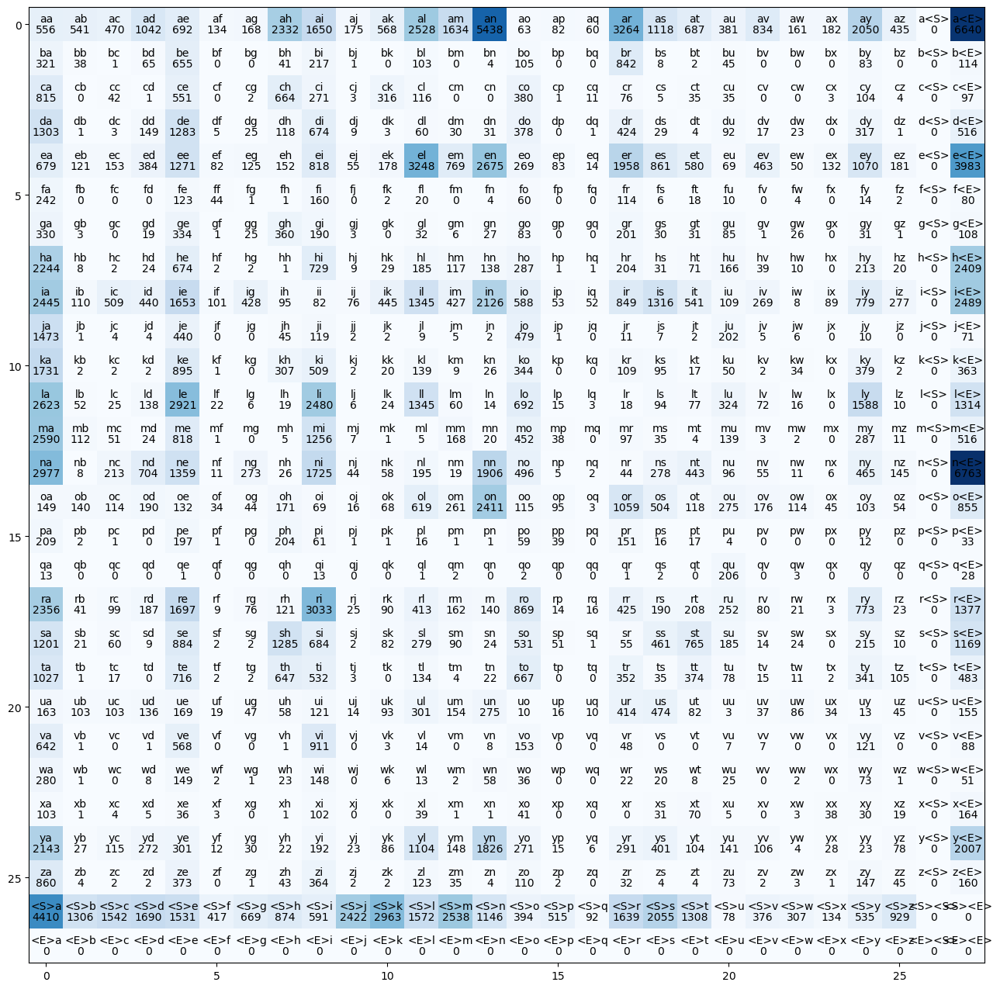
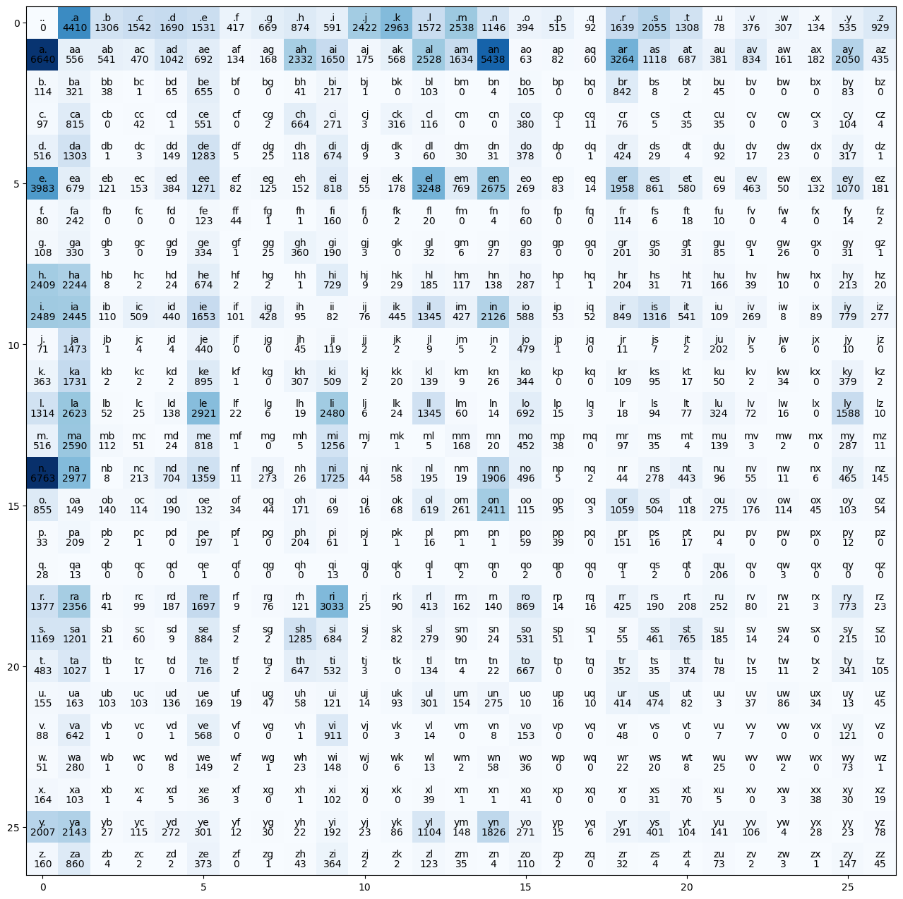
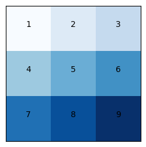
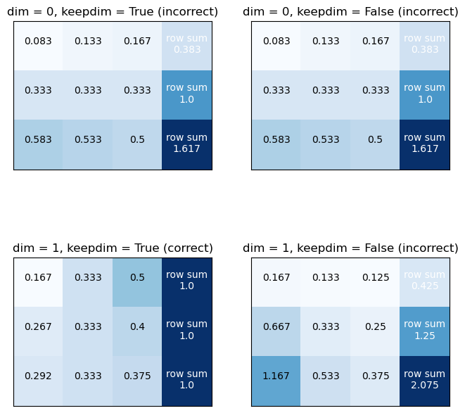
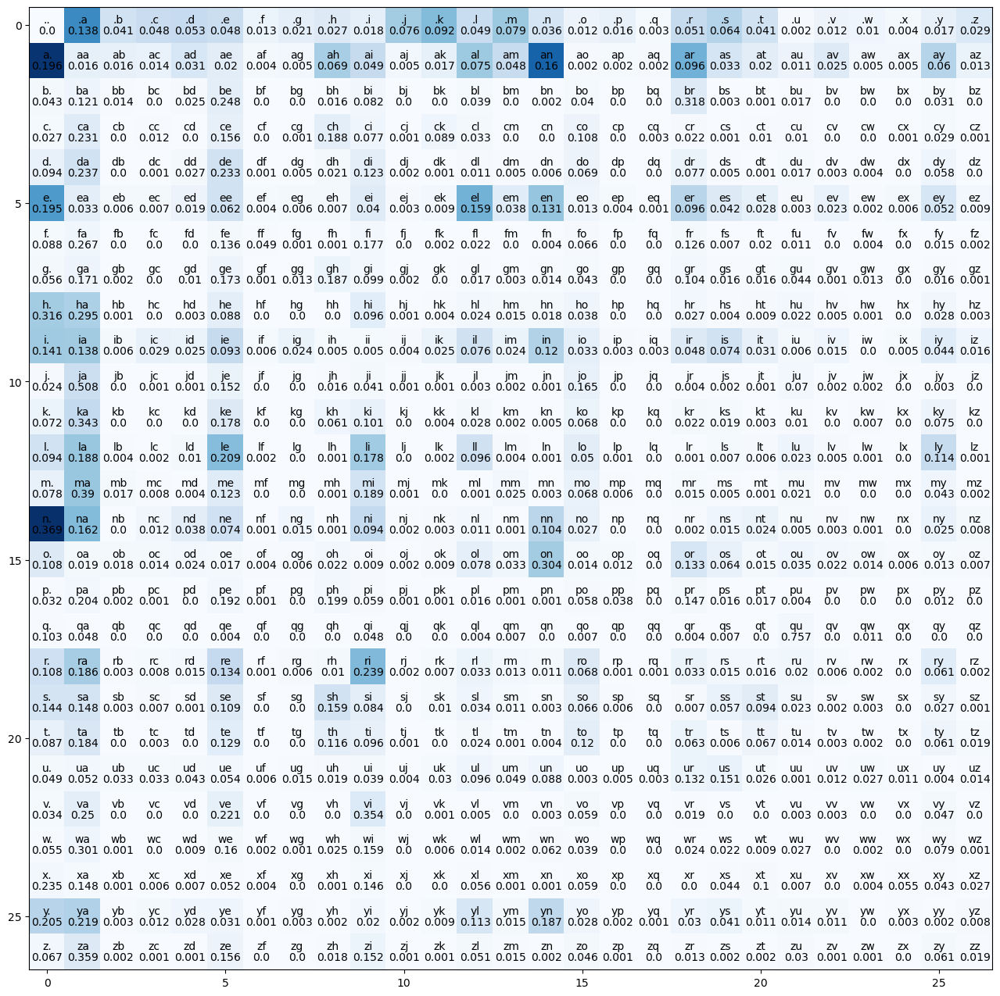
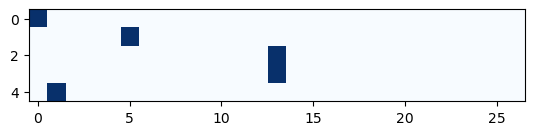
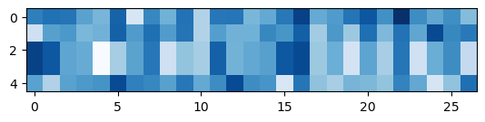
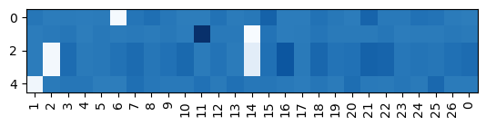

import torch
import matplotlib.pyplot as plt
import torch.nn.functional as FBigram Language Model Character Level
Basic Introduction of Bigram character-level language model which is one of the first topics to learn when learning about language models.
Reading the names from the names.txt which contains the names in lowercase, separated by new line. Dataset is downloaded from https://raw.githubusercontent.com/karpathy/makemore/master/names.txt
words = open("names.txt", "r").read().splitlines()
# Exploring
print(f"first 10 words{words[:10]}")
print(f"length of words: {len(words)}")
print(f"min word length {min(len(w) for (w) in words)} and max word length {max(len(w) for (w) in words)}")first 10 words['emma', 'olivia', 'ava', 'isabella', 'sophia', 'charlotte', 'mia', 'amelia', 'harper', 'evelyn']
length of words: 32033
min word length 2 and max word length 15Bigram
Bigram works with 2 words/characters at a time.
It uses the previous word/charachter to predict the next word/character. It is a simple model but it is a good starting point to understand the problem.
Bigram Dictionary
# getting the Bigrams
b = {}
for w in words:
# add start and end tokens
chs = ["<S>"] + list(w) + ["<E>"]
for ch1, ch2 in zip(chs, chs[1:]):
bigram = (ch1, ch2)
# print(bigram)
# use get instead of b[bigram] to avoid KeyError and set default to 0
b[bigram] = b.get(bigram, 0) + 1We initially used <S> and <E> as the start and end token respectively. But this approach is not useful enough because we can’t have a character that starts before <S> so in the N lookup table there will be a complete row which have 0’s in it.
However instead of using <S> and <E>, we later substitue it for a single . character which indicates both the start and the end and make slight improvement in our code.
# print the most common bigrams in the data (sort by value)
sorted(b.items(), key = lambda kv: kv[1], reverse = True)[:10][(('n', '<E>'), 6763),
(('a', '<E>'), 6640),
(('a', 'n'), 5438),
(('<S>', 'a'), 4410),
(('e', '<E>'), 3983),
(('a', 'r'), 3264),
(('e', 'l'), 3248),
(('r', 'i'), 3033),
(('n', 'a'), 2977),
(('<S>', 'k'), 2963)]Bigram 2D Tensor
We are declaring a tensor which we will use to store the counts of our bigrams
N = torch.zeros(28, 28, dtype = torch.int32)Now we can’t pass string data to our model we need to convert the characters to the number. Why characters? because it is a character level language model Bigram which means we will feed one character to our model and it will try to predict the next character in a sequence. We can also pass multiple character to our model but this is not the architecture of Bigram.
# make a list of characters (a -> z)
chars = sorted(list(set("".join(words))))
# make a dictionary of character to index
stoi = {ch: i for (i, ch) in enumerate(chars)} # alphabet as key, integer as value
stoi["<S>"] = len(chars)
stoi["<E>"] = len(chars) + 1
# make a dictionary of index to character
itos = {i: ch for (ch, i) in stoi.items()} # integer as key, alphabet as valueSample Bigram Language Model – Now basically A bigram language model is a type of language model that predicts the probability of a word in a sequence based on the previous word. Same is true for the character.
In the word case our vocabulary can be 17000 words or 100000 words based on the size of the problem, which in this case each word is assigned a index to be feed in to the model. But in the character level language model our vocabulary size is total number of character used in our whole dataset which are in this case 26 characters and we append . at the start and end of each name so total of we have 27 characters in our problem so our vocabulary size is 27 characters.
# getting the Bigrams
for w in words:
# add start and end tokens
chs = ["<S>"] + list(w) + ["<E>"]
for ch1, ch2 in zip(chs, chs[1:]):
ix1 = stoi[ch1]
ix2 = stoi[ch2]
N[ix1, ix2] += 1Plotting Counts
# visualize this matrix
plt.figure(figsize = (16, 16))
plt.imshow(N, cmap = "Blues")
for i in range(28):
for j in range(28):
# character strings
chstr = itos[i] + itos[j]
plt.text(j, i, chstr, ha = "center", va = "bottom", color = "black")
# bigram counts (.item() converts tensor to int)
plt.text(j, i, N[i, j].item(), ha = "center", va = "top", color = "black")
plt.show()
Fixing zero row and column problem
Notice we have empty row and column for <E> and <S> tokens respectively
We will solve that by replacing both of them with . token as follows:
# make a list of characters (a -> z)
chars = sorted(list(set("".join(words))))
# make a dictionary of character to index
stoi = {ch: i for (i, ch) in enumerate(chars)}
# remove theses tokens from the dictionarystoi["<S>"] = len(chars)
stoi["<E>"] = len(chars) + 1# and add this token
stoi["."] = len(chars)
# make a dictionary of index to character
itos = {i: ch for (ch, i) in stoi.items()}This time we are taking 27 characters because we are using . character at the start and at the end of each name
N = torch.zeros(27, 27, dtype = torch.int32)# make a list of characters (a -> z)
chars = sorted(list(set("".join(words))))
# make a dictionary of character to index
stoi = {ch: i + 1 for (i, ch) in enumerate(chars)} # alphabet as key, integer as value
# set start and end tokens to 0
stoi["."] = 0
# make a dictionary of index to character
itos = {i: ch for (ch, i) in stoi.items()} # integer as key, alphabet as valueIn the below code we are counting out of total 27*27 pairs of bigrams, how many times each bigram appeared in our names dataset. Also note than we append . character at the start and at the end of each name.
# getting the Bigrams
for w in words:
# add start and end tokens
chs = ["."] + list(w) + ["."]
for ch1, ch2 in zip(chs, chs[1:]):
ix1 = stoi[ch1]
ix2 = stoi[ch2]
N[ix1, ix2] += 1Plotting the Counts
# visualize this matrix
plt.figure(figsize = (16, 16))
plt.imshow(N, cmap = "Blues")
for i in range(27):
for j in range(27):
# character strings
chstr = itos[i] + itos[j]
plt.text(j, i, chstr, ha = "center", va = "bottom", color = "black")
# bigram counts (.item() converts tensor to int)
plt.text(j, i, N[i, j].item(), ha = "center", va = "top", color = "black")
plt.show()
Notice: - .. is zero, since we don’t have empty words - the first row is start words - the first column is end words
Sampling from the model
# probability of the first character
p = N[0].float() / N[0].sum()
ptensor([0.0000, 0.1377, 0.0408, 0.0481, 0.0528, 0.0478, 0.0130, 0.0209, 0.0273,
0.0184, 0.0756, 0.0925, 0.0491, 0.0792, 0.0358, 0.0123, 0.0161, 0.0029,
0.0512, 0.0642, 0.0408, 0.0024, 0.0117, 0.0096, 0.0042, 0.0167, 0.0290])Probability that any of the 27 characters can be the first character is 1
p.sum()tensor(1.)# probability
p = N[0].float() / N[0].sum()
# generator is a seed for reproducibility
g = torch.Generator().manual_seed(2147483647)
# sample from the p distribution using the generator (I got different results from Andrej's idk why)
ix = torch.multinomial(p, num_samples = 1 , replacement = True, generator = g).item()
# convert index to character
itos[ix]'j'Using the p as probability distribution we will use it with torch.multinomial to draw samples from p based on the probability
torch.multinomial Returns a tensor where each row contains num_samples indices sampled from the multinomial probability distribution located in the corresponding row of tensor p.
So for each row of the character we draw using torch.multinomial we then calculate probability distribution for that row in the loop which undermine our performance
torch.rand Returns a tensor filled with random numbers from a uniform distribution on the interval [0,1)[0,1)
g = torch.Generator().manual_seed(2147483647)
for i in range(10):
out = []
ix = 0
while True:
p = N[ix].float() / N[ix].sum()
ix = torch.multinomial(p, num_samples = 1 , replacement = True, generator = g).item()
out.append(itos[ix])
if ix == 0:
break
print("".join(out))junide.
janasah.
p.
cony.
a.
nn.
kohin.
tolian.
juee.
ksahnaauranilevias.Vectorization of Probabilities
Instead of calculating the probability distribution p everytime
Broadcasting Example
Two tensors are “broadcastable” if the following rules hold:
- Each tensor has at least one dimension.
- When iterating over the dimension sizes, starting at the trailing dimension, the dimension sizes must either be equal, one of them is 1, or one of them does not exist.
Same shapes are always broadcastable (i.e. the above rules always hold)x=torch.empty(5,7,3) y=torch.empty(5,7,3)
x=torch.empty(5,7,3)
y=torch.empty(5,7,3)x and y are not broadcastable, because x does not have at least 1 dimension
x=torch.empty((0,))
y=torch.empty(2,2)Can line up trailing dimensions - x and y are broadcastable. - 1st trailing dimension: both have size 1 - 2nd trailing dimension: y has size 1 - 3rd trailing dimension: x size == y size - 4th trailing dimension: y dimension doesn’t exist
x=torch.empty(5,3,4,1)
y=torch.empty( 3,1,1)x and y are not broadcastable, because in the 3rd trailing dimension 2 != 3
x=torch.empty(5,2,4,1)
y=torch.empty( 3,1,1)Visual Example
x = torch.tensor([[1,2,3],[4,5,6], [7,8,9]])
# visualize this matrix
plt.figure(figsize = (3, 3))
plt.imshow(x, cmap = "Blues")
for i in range(3):
for j in range(3):
# character strings
chstr = x[i, j].item()
plt.text(j, i, chstr, ha = "center", va = "bottom", color = "black")
plt.xticks([])
plt.yticks([])
# visualize this matrix
x = torch.tensor([[1,2,3],[4,5,6], [7,8,9]])
xs = [
torch.cat([(x / x.sum(dim = 0, keepdim = True)), (x / x.sum(dim = 0, keepdim = True)).sum(dim = 1, keepdim = True)], dim = 1), # normalize by column => incorrect [Wrong]
torch.cat([(x / x.sum(dim = 0, keepdim = False)), (x / x.sum(dim = 0, keepdim = False)).sum(dim = 1, keepdim = True)], dim = 1), # normalize by column => incorrect [Wrong]
torch.cat([(x / x.sum(dim = 1, keepdim = True)), (x / x.sum(dim = 1, keepdim = True)).sum(dim = 1, keepdim = True)], dim = 1), # normalize by row => correct (sum of each row == 1)[Right]
torch.cat([(x / x.sum(dim = 1, keepdim = False)), (x / x.sum(dim = 1, keepdim = False)).sum(dim = 1, keepdim = True)], dim = 1) # normalize by column => incorrect [Wrong]
]
# visualize this matrices
fig, axes = plt.subplots(2, 2, figsize = (8, 8))
for n in range(4):
axes[n // 2, n % 2].imshow(xs[n], cmap = "Blues")
for i in range(3):
for j in range(4):
chstr = xs[n][i, j].item()
if j == 3:
axes[n // 2, n % 2].text(j, i - 0.25, f"row sum\n{round(chstr, 3)}", ha = "center", va = "top", color = "white")
else:
axes[n // 2, n % 2].text(j, i, round(chstr, 3), ha = "center", va = "bottom", color = "black")
if n // 2 == 0 or not(n % 2 == 0):
axes[n // 2, n % 2].set_title(f"dim = {n // 2}, keepdim = {not bool(n % 2)} (incorrect)")
else:
axes[n // 2, n % 2].set_title(f"dim = {n // 2}, keepdim = {not bool(n % 2)} (correct)")
# remove ticks
axes[n // 2, n % 2].set_xticks([])
axes[n // 2, n % 2].set_yticks([])
Vectorization
Wrong boradcasting Example:
P = N.float() / N.sum(dim = 1, keepdim = False)
# Broadcasting:
# N.sum(dim = 1) => (27) => (1, 27) it became a row vector [Wrong]
# N.float() => (27, 27)
# P => (27, 27)
# Wrong [Wrong] sum of each row != 1P = N.float() / N.sum(dim = 1, keepdim = True)
# Broadcasting:
# N.sum(dim = 1, keepdim = True) => (27, 1)
# N.float() => (27, 27)
# P => (27, 27)
# Correct [Right] sum of each row == 1# visualize this probability matrix, it matches the bigram matrix
plt.figure(figsize = (16, 16))
plt.imshow(N, cmap = "Blues")
for i in range(27):
for j in range(27):
# character strings
chstr = itos[i] + itos[j]
plt.text(j, i, chstr, ha = "center", va = "bottom", color = "black")
# bigram counts (.item() converts tensor to int)
plt.text(j, i, round(P[i, j].item(),3), ha = "center", va = "top", color = "black")
plt.show()
# sample from P
names = []
g = torch.Generator().manual_seed(2147483647)
for i in range(10):
out = []
ix = 0
while True:
p = P[ix]
ix = torch.multinomial(p, num_samples = 1 , replacement = True, generator = g).item()
out.append(itos[ix])
if ix == 0:
break
names.append("".join(out))
print(names)['junide.', 'janasah.', 'p.', 'cony.', 'a.', 'nn.', 'kohin.', 'tolian.', 'juee.', 'ksahnaauranilevias.']Training Loss (Negative Log Likelihood)
# getting the Bigrams
for w in words[:3]:
# add start and end tokens
chs = ["."] + list(w) + ["."]
for ch1, ch2 in zip(chs, chs[1:]):
ix1 = stoi[ch1]
ix2 = stoi[ch2]
# probability of each bigram
# should be 1/27 = 0.037 for a uniform distribution i.e., random guessing
prob = P[ix1, ix2]
print(f"{ch1}{ch2} -> {prob:.4f}").e -> 0.0478
em -> 0.0377
mm -> 0.0253
ma -> 0.3899
a. -> 0.1960
.o -> 0.0123
ol -> 0.0780
li -> 0.1777
iv -> 0.0152
vi -> 0.3541
ia -> 0.1381
a. -> 0.1960
.a -> 0.1377
av -> 0.0246
va -> 0.2495
a. -> 0.1960We need a single number to combine all of these probabilities and measure the quality of the model Maximum Likelihood Estimation
So, the product of all probabilities == the sum of log of all probabilities should be as high as possible
Now when calculating the log likelihood if any of our probability is 0 our loss will be very much high. So what we will do we will add a very small amount to our N model so that each biagram will atleast be contributing a little to the output
# for smoothing (to prevent zero probabilities = log(0) = -inf)
P = (N+1).float() / N.sum(dim = 1, keepdim = True)In language models, the negative log-likelihood (NLL) is commonly used as a loss function during training. The goal of a language model is to predict the probability distribution of the next word in a sequence given the context of preceding words.
The NLL measures the difference between the predicted probability distribution and the actual distribution of the next word. Minimizing the NLL during training encourages the model to assign higher probabilities to the correct words. Mathematically, maximizing the log-likelihood is equivalent to minimizing the negative log-likelihood.
def nll_loss(input_list, verbose = False):
log_likelihood = 0.0
n = 0
for w in input_list:
# add start and end tokens
chs = ["."] + list(w) + ["."]
for ch1, ch2 in zip(chs, chs[1:]):
ix1 = stoi[ch1]
ix2 = stoi[ch2]
# probability of each bigram
# should be 1/27 = 0.037 for a uniform distribution i.e., random guessing
prob = P[ix1, ix2]
logprob = torch.log(prob)
log_likelihood += logprob
n += 1
# higher the log probability (closer to 0) is better
if verbose:
print(f"{ch1}{ch2} -> {prob:.4f} {logprob:.4f}")
# higher the log likelihood (closer to 0) is better
print(f"log Likelihood: {log_likelihood}")
# but in loss function lower is better, so we negate it
nll = -log_likelihood
print(f"Negative log likelihood: {nll}")
# normalize it
print(f"Normalized Negative log Likelihood: {(nll / n)}") # we need to minimize this
nll_loss(words[:5], verbose = True).e -> 0.0478 -3.0402
em -> 0.0377 -3.2780
mm -> 0.0254 -3.6713
ma -> 0.3901 -0.9414
a. -> 0.1960 -1.6297
.o -> 0.0123 -4.3956
ol -> 0.0781 -2.5492
li -> 0.1777 -1.7274
iv -> 0.0153 -4.1830
vi -> 0.3545 -1.0372
ia -> 0.1382 -1.9792
a. -> 0.1960 -1.6297
.a -> 0.1377 -1.9827
av -> 0.0246 -3.7033
va -> 0.2499 -1.3867
a. -> 0.1960 -1.6297
.i -> 0.0185 -3.9910
is -> 0.0744 -2.5983
sa -> 0.1483 -1.9086
ab -> 0.0160 -4.1355
be -> 0.2480 -1.3943
el -> 0.1591 -1.8383
ll -> 0.0964 -2.3389
la -> 0.1880 -1.6714
a. -> 0.1960 -1.6297
.s -> 0.0642 -2.7460
so -> 0.0656 -2.7237
op -> 0.0121 -4.4146
ph -> 0.1998 -1.6104
hi -> 0.0959 -2.3450
ia -> 0.1382 -1.9792
a. -> 0.1960 -1.6297
log Likelihood: -77.71862030029297
Negative log likelihood: 77.71862030029297
Normalized Negative log Likelihood: 2.4287068843841553# check the loss of the sample names
nll_loss(names)log Likelihood: -256.8978576660156
Negative log likelihood: 256.8978576660156
Normalized Negative log Likelihood: 3.471592664718628for first training example: .emma.: the nll is 2.512
for the first 5 training exampless: the average nll is 2.429
MLP Approach
Training set of bigrams
In the below code ys is basically the shifted version of the xs. Which means training set will contains the previous character and the next character in the name
xs , ys = [], []
for w in words:
# add start and end tokens
chs = ["."] + list(w) + ["."]
for ch1, ch2 in zip(chs, chs[1:]):
ix1 = stoi[ch1]
ix2 = stoi[ch2]
xs.append(ix1)
ys.append(ix2)
# convert to tensors
xs = torch.tensor(xs)
ys = torch.tensor(ys)
# first word: 5 separate examples (.emma => emma.)
print(xs[:5])
print(ys[:5])tensor([ 0, 5, 13, 13, 1])
tensor([ 5, 13, 13, 1, 0])One-hot encoding
xenc = F.one_hot(xs, num_classes=27).float()
F.one_hot(xs, num_classes=27)converts the input sequencexsinto a one-hot encoded representation. Each element inxsis replaced by a one-hot vector with a length of 27 (assuming 27 classes or tokens)..float()converts the one-hot encoded tensor to floating-point format, which is often required for further operations.
# you have to cast to float for one_hot (doesn't accept dtype parameter)
xenc = F.one_hot(xs, num_classes = 27).float()
plt.imshow(xenc[:5], cmap = "Blues")<matplotlib.image.AxesImage at 0x7f724696a2d0>
Define the network
One Ouptut Neuron Single outputs for each example
xenc @ W - @ is the matrix multiplication operator. It calculates the dot product of the one-hot encoded input xenc and the weight matrix W. - xenc @ W represents the predicted log-counts for each class.
W = torch.randn((27,1))
# apply matrix multiplication (dot product): (5, 27) @ (27, 1) = (5, 1)
xenc[:5] @ Wtensor([[-0.3263],
[-0.3286],
[-0.7713],
[-0.7713],
[-1.6685]])Output Neurons
W = torch.randn((27,27), requires_grad = True)
# apply matrix multiplication (dot product): (5, 27) @ (27, 27) = (5, 27)
xenc[:5] @ W
plt.imshow(xenc[:5] @ W.detach().numpy(), cmap = "Blues")<matplotlib.image.AxesImage at 0x7f724d981310>
Gradient Descent
W = torch.randn((27,27), requires_grad = True)counts = logits.exp() # counts, equivalent to N - logits.exp() exponentiates the predicted log-counts, converting them into counts. This step is common in models where the output is interpreted as log-probabilities.
probs = counts / counts.sum(1, keepdims=True) - counts.sum(1, keepdims=True) computes the sum of counts along the second dimension, ensuring that the result has the same shape as counts. - probs is the probability distribution over the classes for the next character, obtained by normalizing the counts.
loss = -probs[torch.arange(5), ys[:5]].log().mean() - The above equation computes the negative log-likelihood loss for the first five names in the dataset. It selects the log-probabilities corresponding to the true labels ys and computes their negative mean.
# forward pass
# log-counts
logits = xenc @ W
# exp them => counts
counts = logits.exp()
# convert them into probabilities
probs = counts / counts.sum(dim = 1, keepdim = True)
# # the previous 3 lines can be replaced by:
# probs = F.softmax(logits, dim = 1)
loss = - probs[torch.arange(5), ys[:5]].log().mean()loss.item()3.5917840003967285W.grad = Noneinitializes the gradient of the weight matrix to zero before computing the backward pass.loss.backward()computes the gradients of the loss with respect to the parameters using backpropagation.
W -= 0.1 * W.grad- This performs a gradient descent update. It subtracts a multiple of the gradient from the current weight values to update them.
- The learning rate is represented by the value
-0.1. The negative sign indicates that it’s a gradient descent step.
# backward pass
# set gradients to zero
W.grad = None
loss.backward()
# update weights
with torch.no_grad():
W -= 0.1 * W.gradprint(f"{xs[:5]=}")
print(f"{ys[:5]=}")
# The effect of all gradients are positive (increasing the loss) except for the correct one is negative (decreasing the loss)
plt.imshow(W.grad.detach().numpy()[xs[:5]], cmap = "Blues")
plt.xticks(range(27), itos, rotation = 90);xs[:5]=tensor([ 0, 5, 13, 13, 1])
ys[:5]=tensor([ 5, 13, 13, 1, 0])
Combine the forward and backward pass into a single function
W = torch.randn((27,27), requires_grad = True)for k in range(100):
# forward pass
xenc = F.one_hot(xs, num_classes = 27).float()
logits = xenc @ W
counts = torch.exp(logits)
probs = counts / counts.sum(dim = 1, keepdim = True)
# loss
loss = - probs[torch.arange(len(xs)), ys].log().mean()
# add regularization
loss += 0.1 * W.pow(2).mean()
if k % 10 == 0:
print(f"{k}: {loss.item():.4f}")
# backward pass
W.grad = None
loss.backward()
# update weights
with torch.no_grad():
W -= 50 * W.grad0: 3.8628
10: 2.7460
20: 2.6501
30: 2.6189
40: 2.6046
50: 2.5972
60: 2.5930
70: 2.5906
80: 2.5891
90: 2.5882We are expecting loss similar to the training example (about 2.5)
Sampling from the model
Now to get sample from the model we start from the 0 as index which is . character and pass it to our model and use torch.multinomial to draw sample from the distribution calculated by the last layer of our nerual network model
# sample from P
g = torch.Generator().manual_seed(2147483647)
for i in range(10):
out = []
ix = 0
while True:
# previosly we used P[ix]
p = P[ix]
# now we use the softmax of the logits
# xenc = F.one_hot(torch.tensor([ix]), num_classes = 27).float()
# logits = xenc @ W
# counts = torch.exp(logits)
# p = counts / counts.sum(dim = 1, keepdim = True)
ix = torch.multinomial(p, num_samples = 1 , replacement = True, generator = g).item()
out.append(itos[ix])
if ix == 0:
break
print("".join(out))junide.
janasah.
p.
cony.
a.
nn.
kohin.
tolian.
juee.
ksahnaauranilevias.# sample from MLP
g = torch.Generator().manual_seed(2147483647)
for i in range(10):
out = []
ix = 0
while True:
# previosly we used P[ix]
# p = P[ix]
# now we use the softmax of the logits
xenc = F.one_hot(torch.tensor([ix]), num_classes = 27).float()
logits = xenc @ W
counts = torch.exp(logits)
p = counts / counts.sum(dim = 1, keepdim = True)
ix = torch.multinomial(p, num_samples = 1 , replacement = True, generator = g).item()
out.append(itos[ix])
if ix == 0:
break
print("".join(out))junide.
janaqah.
p.
cfay.
a.
nn.
kohin.
tolian.
jgee.
ksahnaauyanilevias.The results are the same, since we’re using the same model with the same loss
W is the log counts (estimated before from the bigram model)